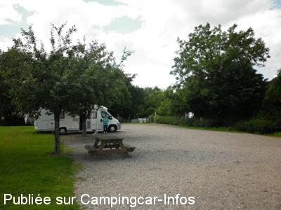
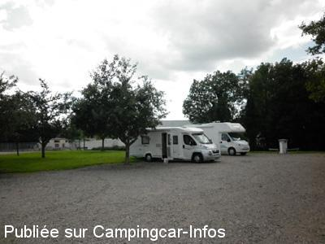
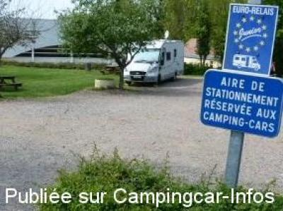
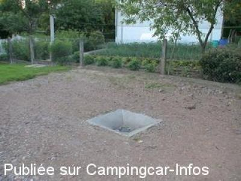
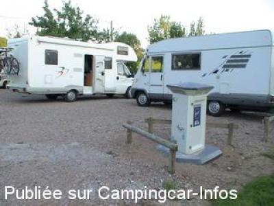
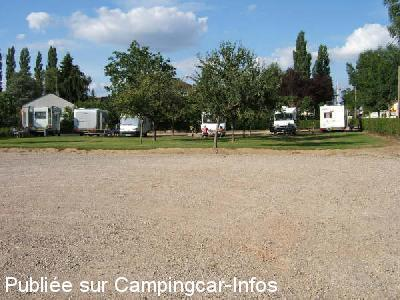

ASN = Aire de services avec stationnement nuit possible de :
SAINT BENIN D'AZY
(N° 557)
Accès/adresse :
Rue Henri Barbusse
58270 SAINT BENIN D'AZY
58270 SAINT BENIN D'AZY
Latitude : (Nord) 47.00093° Décimaux ou 47° 0′ 3′′
Longitude : (Est) 3.39538° Décimaux ou 3° 23′ 43′′
Tarif : 2012
Stationnement gratuit
Eau ou 1 heure d'électricité : 2 €
Jetons à la boulangerie, l'épicerie sur la place du village.
Type de borne : EURO-RELAIS
Services :


Autres informations :
7 emplacements
Tél : +33 (0) 386 584 115

Le 24/06/2012 par Patom59

Le 24/06/2012 par Patom59

Le 04/06/2011 par GT

Le 15/06/2006 par Beat Wydler

Le 15/06/2006 par Beat Wydler

Le 21/02/2006 par jean.le-borgne
de
Patpm27
le 16/07/2015 :
De passage le 14 Juilllet dernier,nous avons apprécié cette aire. Endroit calme,cadre bucolique, propre, facilement accessible et nous avons profité de l'ombre sous les pommiers.Aire à recommander si vos roues vous amènent dans cette région. Un grand Merci à cette commune qui sait accueillir les camping-caristes.
De passage le 14 Juilllet dernier,nous avons apprécié cette aire. Endroit calme,cadre bucolique, propre, facilement accessible et nous avons profité de l'ombre sous les pommiers.Aire à recommander si vos roues vous amènent dans cette région. Un grand Merci à cette commune qui sait accueillir les camping-caristes.
de
Djnt
le 08/06/2014 :
De passage le 06-06-2014, endroit agréable et propre, photos toujours d'actualités.Jetons dans les commerces, (boulangerie).
De passage le 06-06-2014, endroit agréable et propre, photos toujours d'actualités.Jetons dans les commerces, (boulangerie).
de
regis18
le 11/08/2012 :
Bonjour
il est à préciser que les vidanges sont possibles et gratuites
Cordialement
Bonjour
il est à préciser que les vidanges sont possibles et gratuites
Cordialement
de
Phil51
le 26/07/2012 :
Bonjour,
Nous sommes arrêtés début juillet.
Aire bien sympa même si elle est prêt d'une route.
Bonjour,
Nous sommes arrêtés début juillet.
Aire bien sympa même si elle est prêt d'une route.
de
GT
le 04/06/2011 :
des petits coins comme on en voudrais tout les jours
des petits coins comme on en voudrais tout les jours
de
albert rousée
le 15/08/2010 :
Il est vrai que cette aire est très sympa, propre, calme et bien située. Merci à la commune.
Il est vrai que cette aire est très sympa, propre, calme et bien située. Merci à la commune.